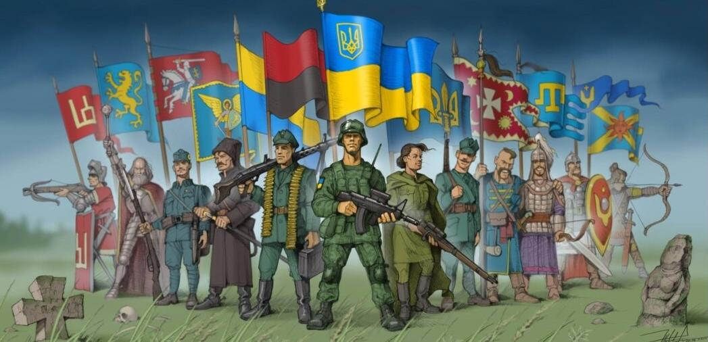
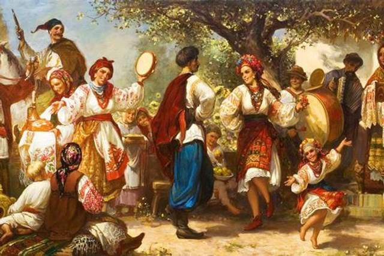
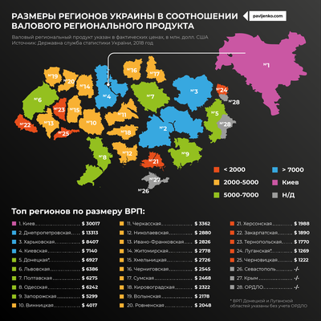

Історія
Україна – це країна з багатою історією, культурними традиціями та стратегічним географічним положенням у самому центрі Європи. Вона поєднує у собі древні цивілізації, які існували на її території тисячоліття тому, та сучасні тенденції розвитку у технологіях, культурі та економіці. Історія Українська земля має давнє минуле, яке простягається ще до часів трипільської культури (IV–III тисячоліття до н.е.). Ця цивілізація залишила величезну спадщину у вигляді поселень та артефактів, які вражають археологів і сьогодні. У IX столітті на території сучасної України виникла держава Київська Русь, яка стала одним із наймогутніших державних утворень середньовічної Європи. Столиця, Київ, була одним з ключових центрів культури, політики та релігії. Прийняття християнства в 988 році стало важливим моментом, який визначив подальший розвиток культури і релігії українського народу. З XII по XVII століття українські землі пережили складні періоди під впливом Великого князівства Литовського, Речі Посполитої, Османської імперії та Московського царства. Козацька доба, яка розпочалася у XVI столітті, залишила незабутній слід в українській історії. Запорізька Січ стала символом боротьби за незалежність і свободу, а Богдан Хмельницький в середині XVII століття очолив повстання проти Речі Посполитої, що призвело до утворення Гетьманщини. У XIX столітті Україна була поділена між Російською та Австро-Угорською імперіями. Протягом цього періоду українські національні рухи набирали силу, ідеї незалежності почали набирати обертів, що призвело до подій початку ХХ століття. Після Першої світової війни у 1917-1921 роках відбулася спроба здобути незалежність, що призвела до короткочасного існування Української Народної Республіки (УНР). Однак після поразки у війні Україна стала частиною Радянського Союзу. Україна отримала незалежність 24 серпня 1991 року після розпаду Радянського Союзу. Ця подія стала ключовою в новітній історії країни і визначила подальший курс на побудову незалежної демократичної держави.
Культура
Українська культура – це багатовікове поєднання традицій, народної творчості та впливів різних етносів і культур, які проживали на її території. Українська мова є однією з найстаріших слов'янських мов і відіграє важливу роль у формуванні національної ідентичності. Традиційна українська музика і танці, такі як гопак та коломийка, добре відомі у світі. Українські народні пісні, зокрема обрядові, весільні, різдвяні колядки, мають глибоке символічне значення. Вишивка також є важливою частиною української культури. Орнаменти на вишиванках символізують різні елементи природи і духовного життя. Література займає окреме місце в культурній спадщині країни. Постаті, як Тарас Шевченко, Іван Франко, Леся Українка, стали знаковими фігурами в розвитку не лише української, а й світової літератури. Їхні твори стали символом боротьби за національну незалежність та ідентичність.
Економіка
Україна має значний економічний потенціал завдяки багатим природним ресурсам і розвиненій промисловій базі. Основою економіки є аграрний сектор – Україна є одним з найб ільших виробників і експортерів зерна у світі. Родючі чорноземи дають можливість вирощувати пшеницю, кукурудзу, соняшник, цукрові буряки та інші культури, що забезпечує країні провідне місце на світових аграрних ринках. Окрім сільського господарства, Україна має потужний індустріальний сектор. Видобуток корисних копалин, зокрема вугілля, залізної руди, а також металургійна та машинобудівна промисловість відіграють значну роль в економіці країни. Україна також має розвинений енергетичний сектор, зокрема атомну енергетику, яка забезпечує близько 50% потреб країни в електроенергії. У ХХІ столітті Україна почала активно розвивати IT-сектор. Сьогодні країна є важливим центром розробки програмного забезпечення і стартапів, завдяки висококваліфікованим спеціалістам. Київ, Львів, Харків та Одеса стають технологічними хабами, де зростає кількість інноваційних компаній та аутсорсингових центрів. Проте Україна стикається з численними економічними викликами, зокрема через військові дії на сході країни, які почалися після анексії Криму Росією у 2014 році та підтримки сепаратистів у Донецькій і Луганській областях. Ці події вплинули на економіку, зокрема втрата важливих промислових потужностей та падіння інвестиційного клімату.
Політика і суспільство
Україна є парламентсько-президентською республікою. Політична система країни включає поділ влади на виконавчу, законодавчу та судову. Президент обирається на п'ять років і є головнокомандувачем Збройних сил України. З моменту здобуття незалежності Україна пережила кілька революцій та великих суспільно-політичних потрясінь. У 2004 році відбулася Помаранчева революція, яка була викликана фальсифікаціями на президентських виборах. У 2013-2014 роках країну охопив Євромайдан – масові протести за європейське майбутнє України, що призвели до зміни уряду та початку активного курсу на інтеграцію з Європейським Союзом. Після початку військових дій на сході та втрати Криму, Україна посилила свої дипломатичні та військові зусилля для захисту територіальної цілісності. Одним з ключових зовнішньополітичних напрямків є поглиблення співпраці з НАТО та ЄС. Внутрішні реформи стосуються децентралізації, боротьби з корупцією, реформування судової системи та освіти.
Сучасність
Сьогодні Україна – це країна, яка проходить складний, але важливий шлях трансформації. Вона прагне модернізувати економіку, зменшити залежність від зовнішніх впливів і побудувати демократичне суспільство на засадах верховенства права та свободи слова. Україна також стає дедалі більш інтегрованою в європейський економічний і політичний простір. Підписання Угоди про асоціацію з ЄС у 2014 році стало ключовим моментом на шляху до євроінтеграції. Реформи в різних секторах, особливо в енергетиці, правосудді та антикорупційних ініціативах, є частиною цього процесу. Окрім цього, українське суспільство залишається активним і згуртованим у прагненні до свободи, демократії та суверенітету. Незважаючи на виклики, країна зберігає прагнення до економічного розвитку, інновацій і культурного відродження.